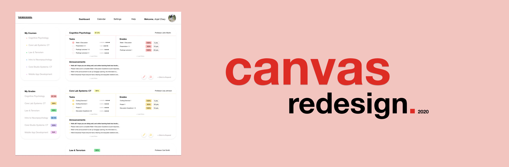
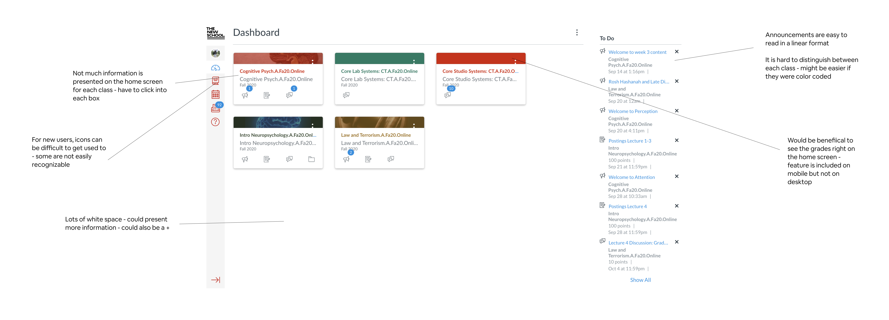
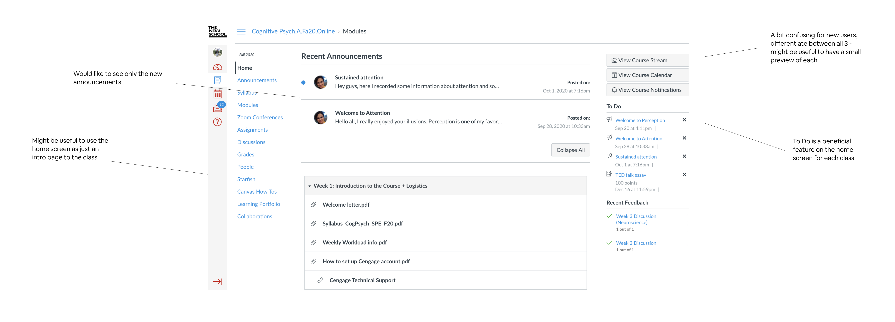
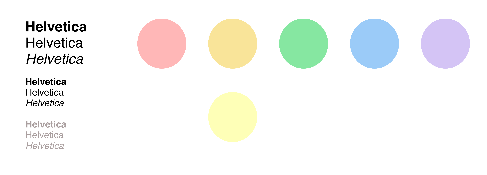
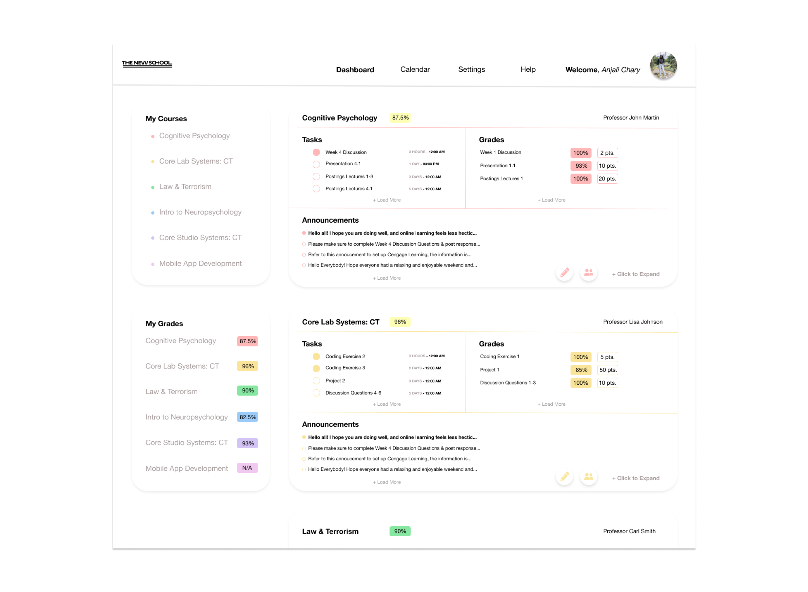
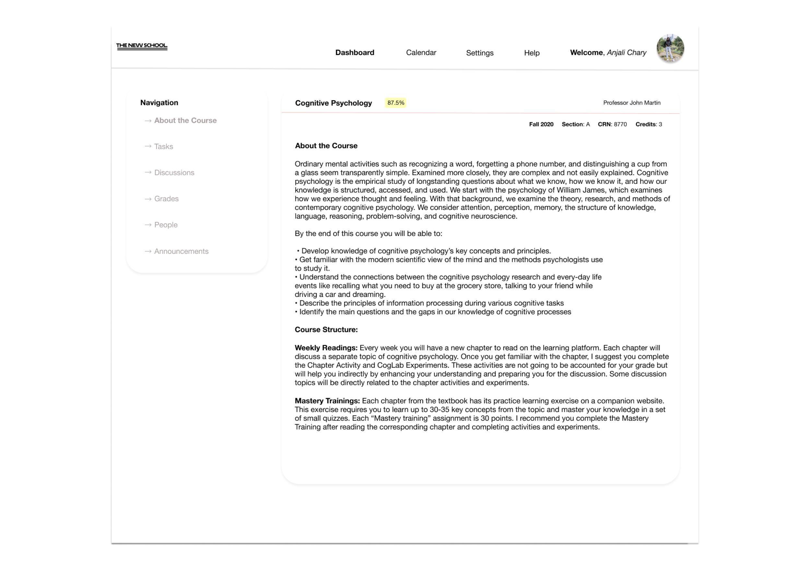
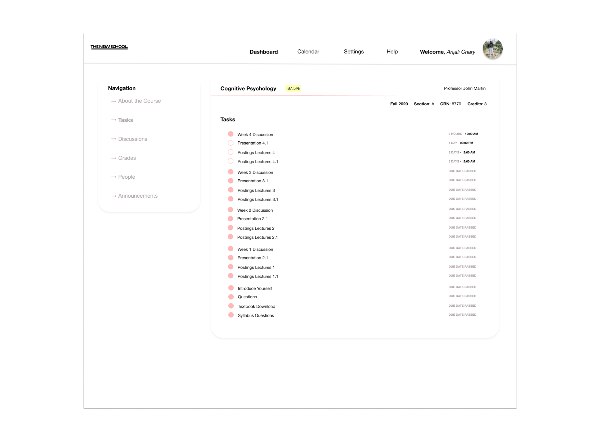
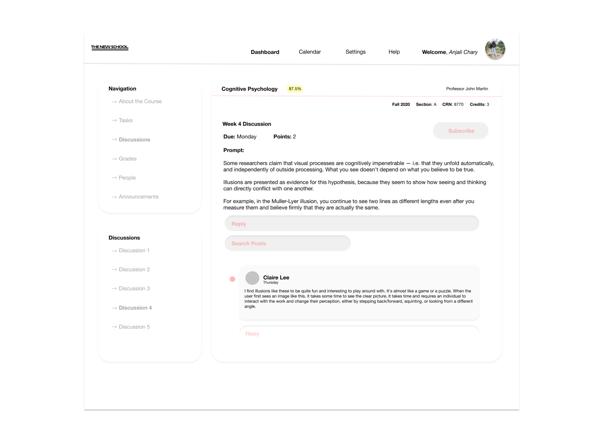
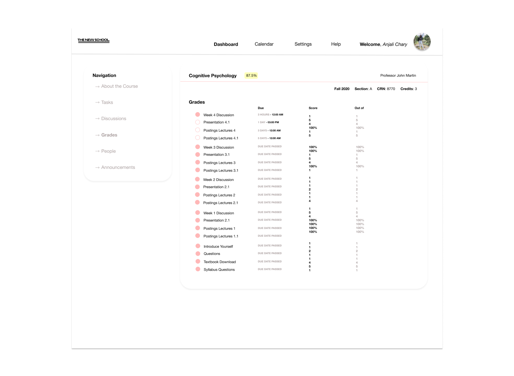

canvas redesign
A short case study on redesigning the learning ecosystem, Canvas. (not finished)
What is Canvas?
Canvas is an open, extensible learning ecosystem for schools of all sizes. With Canvas, admins and educators can easily integrate the systems and apps they need to support every student, at every stage, in any learning environment.
Introduction + Disclaimer
This project serves more as a practice and exercise for me than a complete case study. This is the first time that I embarked on the task of redesigning an application. I wanted to choose an application that I use in my day to day life. This project in no way discredits the design of Canvas but was more of a practice for me to see how I could make the design suit my needs. This is what I will be covering in this case study:
- Demographics/Target Audience
- Pain Points
- Finished Result
Who is the Target Audience?
The platform Canvas is used primarily by college students and the professors. The platform is useful to students in that they have the ability to check their syllabus, read announcements, engage in discussions, interact with classmates and their professor, as well as check their grades. Professors are able to update their Canvas page with upcoming assignments, give feedback to their students, and make announcements to the class.That being said, Canvas serves as an extremely useful tool to students and professors, especially during this time where face to face interaction is very limited or completely eliminated. The target demographic is 18-24 year old college students. Many students also have the mobile application, but for this case study, I will just be focusing on the browser design.
Let's Talk about the Design


My Redesign





